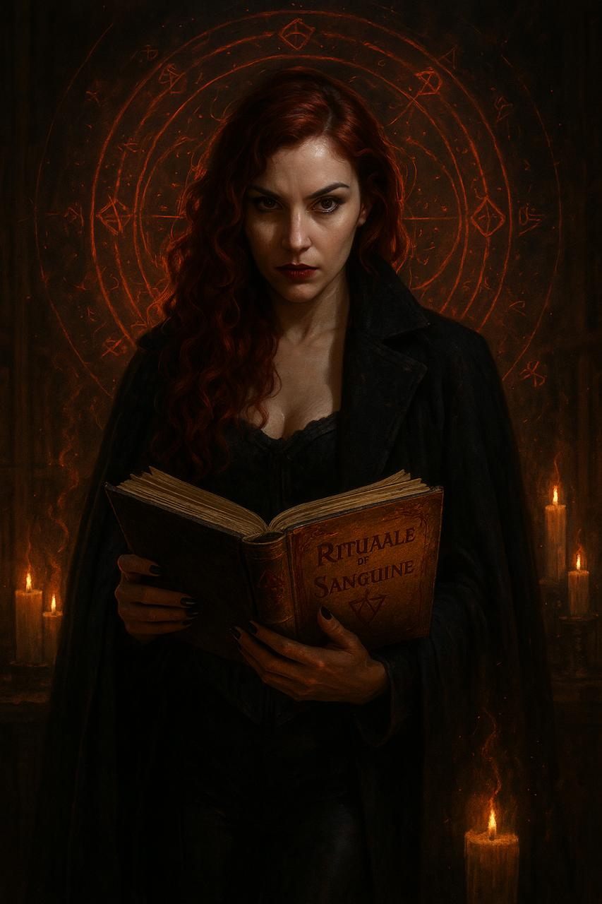
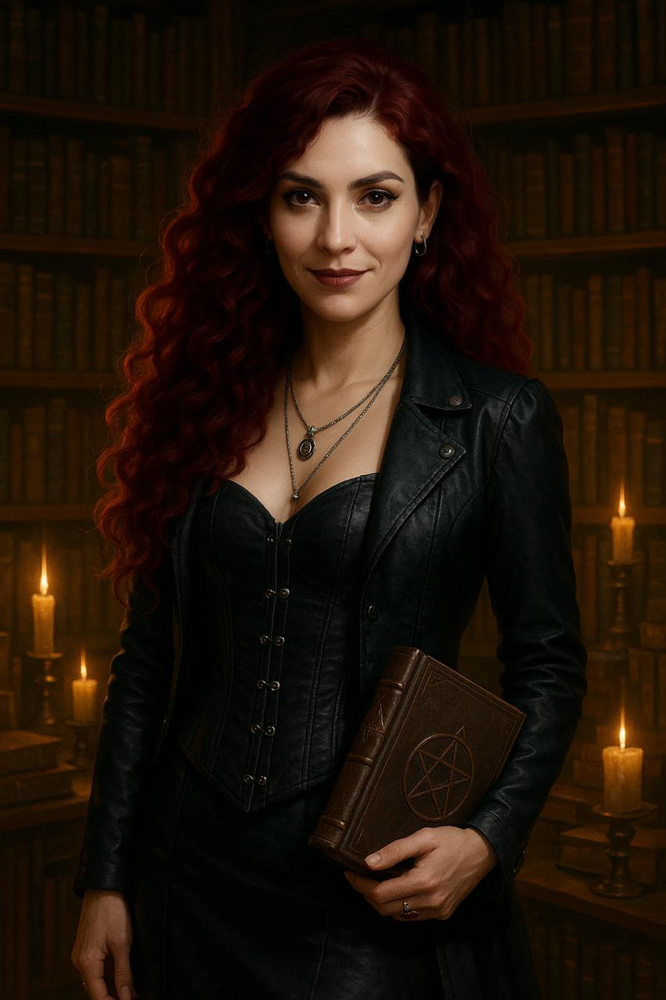

Refúgio de Mirela

Fragmentos do Grimório
“A cidade está viva. Seu subterrâneo pulsa com ecos antigos. Os rituais feitos no Museu mantêm o selo, mas algo escapa… algo observa.”
“Através do sal negro, da rosa seca e do sangue da lembrança, conjuro a proteção sobre meu santuário.”
“Barbacena não foi escolhida à toa. Os Tremere sabiam. A loucura do lugar não era apenas humana.”
Palavras do Mestre
Mirela, os olhos que te vigiam não vêm apenas da Princesa ou dos Anarquistas.
Há algo nos sussurros do subsolo que ecoa tua linhagem.
Um antigo símbolo aparecerá em tua próxima visão. Não o ignore.
Sua interpretação pode salvar — ou condenar — teu círculo.


Mensagens Recebidas
Correio da Noite
História Completa
Mirela Sangrimor
“Aquela que escreve feitiços com sangue”.
Clã: Tremere
Afiliação: Casa Carna
Geração: 10ª
Local do Refúgio: Um sobrado antigo e discretamente reformado no bairro Santa Tereza, com um porão oculto convertido em laboratório ritualístico.
Conceito: A Escritora do Sangue
Mirela é uma ritualista nata, uma estudiosa das manifestações arcanas contidas no vitae vampírico. Desde o Abraço, ela desenvolve sua própria "linguagem de sangue", inscrevendo rituais únicos em pergaminhos e na própria pele.
Acredita que o sangue é a verdadeira linguagem da Criação — e que decifrá-lo é uma forma de libertação espiritual, especialmente para as mulheres da linhagem Tremere.
Nascida em Ouro Preto, Mirela cresceu entre livros, lendas e igrejas silenciosas. Descobriu desde cedo uma conexão com o oculto — via símbolos nas rachaduras da parede e escutava vozes durante as missas. Foi atraída por um culto secreto feminino nas matas próximas, onde aprendeu a ler o sangue como se fosse poesia. Seu Abraço veio de uma Tremere da Casa Carna, que viu nela uma "voz original" para os rituais.
Mas sua mentora desapareceu misteriosamente, e agora Mirela busca pistas nos subterrâneos de BH, acreditando que a cidade guarda ecos antigos — talvez ligados ao segredo que pulsa sob o Rio Arrudas. Entre a Camarilla e os Anarquistas, ela navega perigosamente, sendo útil demais para ser destruída… por enquanto.
Disciplinas:
• Feitiçaria de Sangue (Ritualista Avançada)
• Ofuscação (aprendida para se ocultar de olhos perigosos)
• Dominação (em menor escala — apenas para conter mentes inquietas durante rituais)
Vantagens e Defeitos sugeridos:
• Vantagem: Biblioteca Oculta (pequena coleção de grimórios antigos e inacabados)
• Vantagem: Ritual Exclusivo: Marcação de Sangue Espelhado (lê pensamentos impressos no sangue coagulado)
• Defeito: Fama entre os Anarquistas como "bruxa perigosa"
• Defeito: Débito com Ícaro Menezes — ele conhece um segredo sujo de seu Abraço
Personalidade:
• Fala com calma e mistério, como quem conduz um ritual o tempo todo.
• Encanta com palavras e gestos sutis.
• Odeia autoridade cega, mas respeita estruturas se puder estudá-las e corrompê-las.
• Tem um olhar de quem já viu coisas que não deveriam existir.